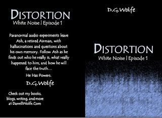

It feels good to write again…
Writing
White Noise
Today, I read the entire first opening scene. I also edited the scene. I reaquainted myself with the novel that was such a part of our last years together, discussing it, planning how it could be better. She’ll never get to read the finished product.
So working on it… It means I’m moving forward. And that’s both beautiful and terrifying.
In previous renditions (before her passing) I added things that made the text incongruent. So almost two years later now (22 months), I noticed them, and threw in some edits. I hesitate to say that I am “back”… but it felt good. Really good. So I think I’ll make a point to get in and start reviewing what I already had, edit, and see if the story comes back enough to pick up where I left off and finish it.
One cannot post such a statement without sharing… so here is Scene One of my Work in Progress “Distortion: Book 1 of the White Noise Series”.
***
Grounded Cafe
Through the window of the Grounded Cafe, Ash noticed two men dressed in all black duck behind a blue minivan. Ice ran down his spine. His right arm shot to the Glock 10mm at his side. Sucking in a breath he took a second look— They were gone. Black mist poured out from under the minivan and evaporated into the early morning air.
He shook his head, closed his eyes. Counting to ten, silently, Ash released the grip on his sidearm, which he now realized was a tape measure and not a Glock. Ash hadn’t had a right to carry a weapon, officially, since he left the service. He let his arm fall to his side, and wiped the sweat from his hands on his pant leg. Reality settled back onto his shoulders. A glimpse of himself in the glass window revealed a strong gray overtaking the sideburns. Other than a few wrinkles, he hadn’t aged that badly.
A woman in a purple hoodie walked by just outside the window, head buried in her smartphone. She bumped into Hank, the town’s crazy old homeless man who was headed the other direction. She didn’t even notice. He gave her a dirty look and kept walking the other way, mumbling to himself as usual.
The woman sat down at a table just outside the farthest window of the Cafe, he couldn’t make out her face, possibly one of the towns last tourists before the few stores left went into hibernation. An orange Maple leaf lazily floated down to the table in front her. She brushed it aside, falling inside a pumpkin whose top had been kicked off. The leaf caught on fire from the candle inside, and slowly embered away. She didn’t take notice. A white vaper swoddled her like a blanket.
Hank stared at her from the corner of the building. A small green frog sat on his shoulder. The bottom half of the frog was a mist that disappeared into his spine. The frog’s red eyes stared at her, then at Ash, and it cocked its head to one side. Then it was gone, in a whisp of black fog that continued to waft around him as he walked away out of sight.
Ash didn’t see these creatures on every person every time. There were times where he would see only the mist, one doctor lady a few years called it an “aura”, she was a bit of a quack but he tried everything to at least understand it if he couldn’t get rid of it. The mists and creates came from the person and would go back into them. The Creatures weren’t all exactly alike, either.
PTSD, Post Traumatic Stress Disorder, his doctor had called it. They tried giving him a mountain of drugs to help him sleep and keep the delusions at a minimum. Nothing really helped. When Idaho legalized medicinal THC, his doctor gave him the card he would need. They’d also managed to create a pill form with less hallucinogenic properties but twice the pain killing properties. Capitalism was great!
Since then, sleep was more regular but the delusions came and went. He could still hear the diagnosis in his mind. “As long as you are not a harm to yourself or others, you should be just fine. Think of it as an amusing distraction,” the doctor advised.
“Ash,” Derek the Barist’ called his attention to the present. “Here you go, man. Extra Large Java-Chip, Almond Milk, Three Shots, with Peppermint and Whip. I even through a candied coffee bean on there for you.”
Turning from the window, Ash grabbed his coffee from the stand. “Thanks, Derek”, as he headed to his spot.
“Always my friend.” Derek kept smiling as he turned his attention to the next order.
The cool leather crunched and crinkled as Ash settled into his favorite corner chair. Up against a wall so nobody could surprise him. Within a quick few steps from three exit paths. Easy to be missed in the dark corner but positioned perfectly to scope the entire room at the same time.
A young man with a hoodie typing furiously at a keyboard. A woman talking on the phone, failing to pacify the toddler in the stroller to her side. Two men speaking in hushed tones at a table across the way. Only a few tourists left so the Cafe’ isn’t too busy—
Screeching tires— Crunching metal— Thud— the building shook slightly. The small-town crowd that had been meandering between the stores that were still open for the season began pooling just outside and to the left of the view of the front window.
Ash took his coffee from the side table and headed out the front door. The two men Ash had seen huddled in conversation across the cafe pushed past him on the way out the door to see what was happening. The taller muscle man bumped into his shoulder, hard.
“Sorry,” The man replied in a curt accent, East Coast of some kind, maybe New York or New Jersey.
Steam billowed from what was left of the front end of an old silver Honda Civic, 1990’s model.The car was T-boned into the side of a black Toyota pick-up. Both drivers had already gotten out of the vehicles. No one for Ash to rescue, so he started to walk past the crowd down the street. Too many people in one space for his taste, he decided to head home.
As he passed the scene, some movement caught his attention from the top of a third vehicle, an old truck.
“What do you care?” said Hank, the old man with a graying beard and brown plaid dress jacket who was climbing up onto the cab a pick-up. “Yeah— I know—” he yelled then her murmured something Ash couldn’t hear.
Great— He’s having another episode.
“Hank,” Ash said. “Hank, is that you old man? Why don’t you come down from there?”
Hank, the town Kook as some called him, looked at Ash with a flicker of recognition which faded quickly. Just behind him, a dark mist rose from the bed of the truck.
Not again. Not now. Ash felt his chest tighten.
The mist grew until it towered over Hank as a father over his toddler. It grew arms with bulging muscles but the head of a bull, red eyes, and three white streaks across its chest.
Another smaller creature, akin to a hairless monkey, was coming out of Hank’s spine and whispering into his ear. Reacting to each murmur as though it were the other half of an invisible conversation.
The larger creature stared directly at Ash. It bent down and the smaller creature evaporated. The bull-man whispered into Hank’s ear and he too snapped his attention to Ash. Then he leapt off the truck toward Ash, knocking down two men from the crowd on his way to the middle of the street.
Ash felt his feet sticking to the pavement as though they were glued. He raised one arm in defense as the old man tackled him, nails trashing at his throat.
“Jesus—,” Ash let out.
The old man stopped attacking, looking dazed. Ash needed no further opening. He struck the old man in the chin with his elbow and followed with a strike to the side of the neck with a knife hand. Rolling out from under him, he hog-tied Hank with his own belt, then he sat on him with one knee to keep him from moving.
Siren’s broke up the crowd and the Sheriff’s SUV pulled to stop next to them.
“You alright?” The Sheriff asked.
“Danny,” Ash replied. “To be honest, I’m feeling a bit embarrassed. I’m loosing my touch to get tackled by an old man.” They both laughed.
“I’ll take it from here,” Danny and his deputy took Hank and laid him in the back seat of the squad car.
“You need medical attention,” Danny said. “Your neck is all scratched to heck, man.”
“No,” Ash replied. “It’s not as bad as it looks. I’ll take care of it at home.”
“Whatever you say, but I need you down at the station for a statement. Is tomorrow. OK?”
“Sounds good. See you then, Danny.”
“Cool. Take care of that, Ash.”
Ash started to reach for the coffee that had miraculously survived the ordeal, when someone wearing purple leggings walked by and kicked the drink over, pouring all over the pavement and the bottom edge of his jeans. She was across the street before he could look up to see who she was.
“Great! Thanks, lady!” Ash yelled, as she turned a corner. She either didn’t hear or pretended not to and kept walking away, into a small boutique that sells antiques and strange creations from locals.
“Could this day get any better?” Ash mumbled to himself as he walked down the street for home.
***
|
 |
| Working Cover / Not Final |